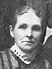

Lorenzo Wesley and Priscilla Parrish Roundy Family
Home
Histories
Charts
Photos
Maps
Restricted
News
Info
Contact
|


 |
Fannie Jane Roundy  21 Dec. 1858 - 6 Mar. 1946
21 Dec. 1858 - 6 Mar. 1946Married John Henry Willis  29 Nov. 1878 29 Nov. 1878
The 1st child of Lorenzo Wesley Roundy and Prisella Parrish |
|
Sarah Roundy 17 Sep. 1861 - 19 Sep. 1941 Married James Thomas Berry 5 Apr. 1878 The 2nd child of Lorenzo Wesley Roundy and Prisella Parrish |
  |
Samuel "H" Roundy 24 Dec. 1862 - 22 May 1940 Married Eugenia Elmira Taylor 3 Oct. 1883
The 3rd child of Lorenzo Wesley Roundy and Prisella Parrish |
  |
Joel Jesse Roundy
20 Nov. 1864 - 26 Jun. 1949 Married Sarah Catherine Stapley 11 Mar. 1887
The 4th child of Lorenzo Wesley Roundy and Prisella Parrish |
  |
Annie Isadore Roundy 1 June 1867 - 19 Aug. 1949 married Henry William Davis 10 Feb. 1886
The 5th child of Lorenzo Wesley Roundy and Prisella Parrish |
| * | David Alonzo Roundy 5 Sep. 1869 - 9 Aug. 1870
The 6th child of Lorenzo Wesley Roundy and Prisella Parrish |
|
Lydia Annis Roundy 16 June 1872 - 18 July 1946 Married Josiah Franklin Reeves 29 Oct. 1890 The 7th child of Lorenzo Wesley Roundy and Prisella Parrish |
|
Heber Lorenzo Roundy 22 Aug. 1875 - 26 Aug. 1953 Married Elizabeth Pollock 10 Mar. 1897 Married Elizabeth Frost 27 Sep. 1909 The 8th child of Lorenzo Wesley Roundy and Prisella Parrish |
Back to Buchanan Family History web pages.